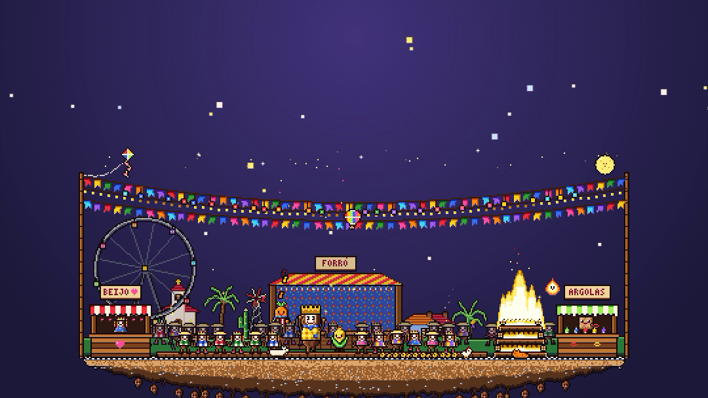

CUIDE BEM DA SUAMANDIOCA
Um jogo idle de festa junina
para a sua área de trabalho
para a sua área de trabalho
07 · PLACA DO TÍTULOframe-07 · 53,5–58,7 s
Primeiro a festa escurece, depois a placa cai: balança uma vez; no último tempo forte sobe a linha que diz o que o jogo é (vale antes e depois do lançamento); daí em diante nada se mexe enquanto a música fecha.
entrada: crossfade · logo-assemble-lockupMapa de cortes
1
zoom2
corte3
corte4
corte5
flash6
fade7
09,718,928,237,446,653,558,7 s
Cada corte cai no início de uma frase da música (4 compassos de 2,305 s). Em 46,6 s a música pula para a última frase (2:37,3 → 2:49,3): a emenda fica escondida no flash da cena 6. Dentro das cenas, as trocas caem nos compassos.
Tokens
noitepapel
destaquetinta
madeiramadeira clara
vermelho
- Fredoka 700 — legendas 84 px, título 124 px (contorno de 14 px)
- Space Mono 700 — números do selo, 46 px, amarelo
- Pixel art sempre em pixel exato
- Proibido: interface do jogo desenhada à mão, neon, gradiente de texto, cenas soltas como slides, duplo sentido